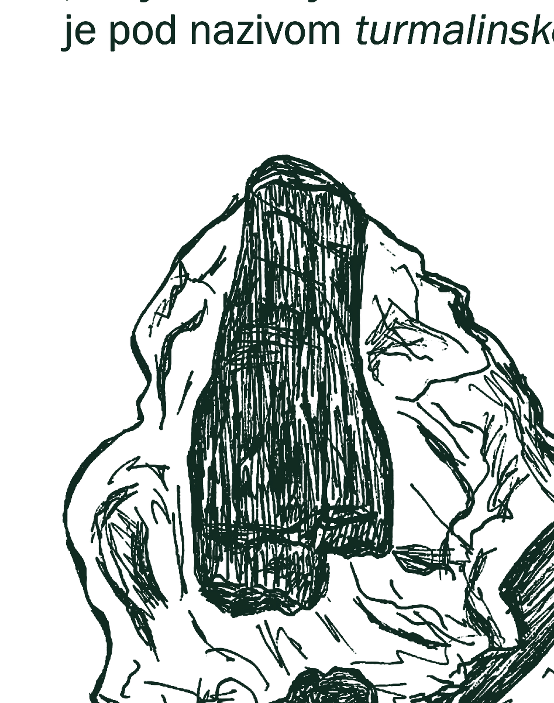
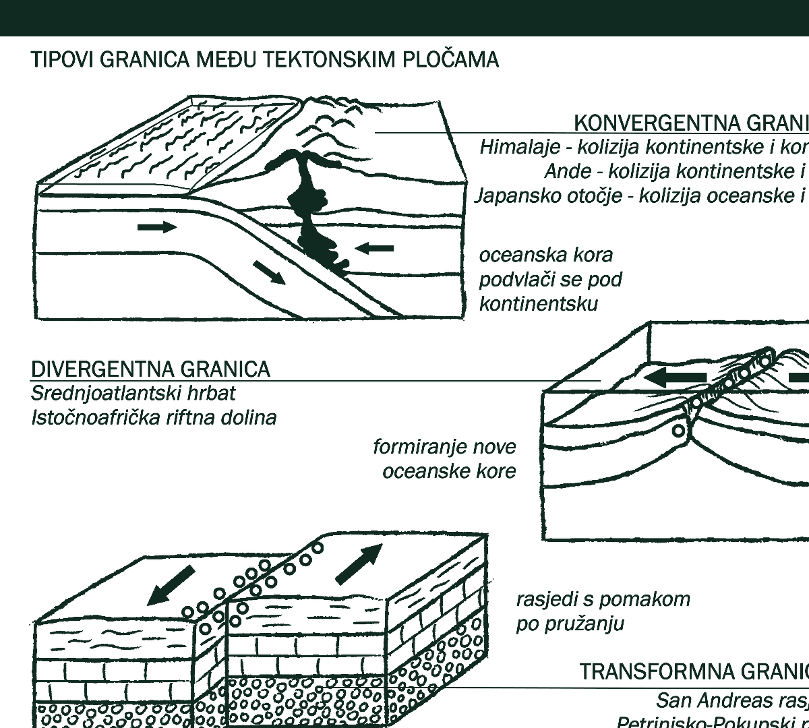

Granit
Kisela dubinska stijena od kvarca, kiselih plagioklasa, mikrokline i biotita. U moslavačkom granitu javljaju se i andaluzit te silimanit. Granit iz Gornje Jelenske korišten je za prvo postolje spomenika banu Jelačiću.
01 · Geologija
Moslavačka gora nije samo šumovita uzvisina. To je izdanak zone u kojoj su se sudarile dvije velike tektonske jedinice — i mjesto gdje se na nekoliko četvornih kilometara može pročitati 83 milijuna godina Zemljine povijesti.
Moslavačka gora nalazi se u Savskoj suturnoj zoni, složenom kontaktnom području između Europske ploče (njezina dijela Tisije) i Jadranske mikroploče, Adrije. Ta zona nastala je zatvaranjem oceana Neotethys i podvlačenjem Europske ploče pod Jadransku. U dubini je došlo do taljenja stijena, a granitna magma izdizala se prema površini.
Danas je moslavački kristalin relativno malen, ali kompleksan granitni pluton: klinasta ploča debela 4–5 km koja tone prema jugozapadu i gradi dvije trećine površine gore. Oko njega su ostaci starijih metamorfnih stijena, a na obodu sedimenti Panonskog bazenskog sustava.
Zato Moslavačka gora ima dvostruku vrijednost: znanstvenu, jer je prirodni laboratorij za proučavanje dodira ploča, i obrazovnu, jer se na malom prostoru mogu vidjeti gotovo sve glavne vrste stijena.
Ukratko
Gora se nalazi između rijeka Česme, Lonje i Ilove. Najbliži veći gradovi su Kutina, Popovača, Garešnica i Čazma.
Presjek kroz vrijeme
Zamisli da prerežemo goru poput kolača. Ispod tankog sloja tla i šume leži granitno tijelo, oko njega metamorfne stijene, a na obodu slojevi sedimenata. Crvene crte su rasjedi — pukotine duž kojih su se blokovi pomicali.
Vremenska crta
Najstarije stijene gore pripadaju metamorfnom kompleksu — gnajsevi, amfibolitu, škriljavci. One čuvaju zapis o dubokim procesima u kori.
U gornjoj kredi, tijekom alpske orogeneze, magma se izdiže i skrućuje kao granitni pluton. Okolne stijene bivaju metamorfozirane, a u granitu se javljaju andaluzit i silimanit.
More plavi Panonski bazen, a Moslavačka gora je kopnena uzvisina okružena vodom. Fosili školjaka, koralja, ježinaca i morskih sisavaca ostali su u sedimentima.
Stanjivanje kore, donos pijeska i lapora, nastanak horstova i graba. Uz rasjede se formiraju strukture koje će postati ležišta nafte i plina.
U Mikleuški se otvara bušotina — Moslavina postaje najstarija naftna regija u Hrvatskoj, s tradicijom dužom od 150 godina.
Moslavačka gora proglašena je drugim regionalnim parkom u Hrvatskoj, zbog krajobrazne, biološke i geološke raznolikosti.
Stijene i minerali
Na Moslavačkoj gori nalazimo magmatske, metamorfne i sedimentne stijene — rijetka prilika da se sve tri velike skupine vide na jednom mjestu.
Kisela dubinska stijena od kvarca, kiselih plagioklasa, mikrokline i biotita. U moslavačkom granitu javljaju se i andaluzit te silimanit. Granit iz Gornje Jelenske korišten je za prvo postolje spomenika banu Jelačiću.

Turmalin tvori prizmatične kristale, a njegov radijalno-zrakasti agregat zove se „turmalinsko sunce“. Kvarc čađavac bio je uresno kamenje — od njega je Grad Zagreb dao izraditi diadem za belgijsku princezu Stephanie.

Konvergentne, divergentne i transformne granice objašnjavaju zašto se stijene lome, naboravaju i izdižu. Moslavačka gora smještena je u zoni kontakta dviju ploča — zato je njezina građa tako složena.
Stručna studija iz 2009. identificirala je 17 značajnih geolokaliteta. Neki su danas zaštićeni ili uređeni, a mnogi tek čekaju sustavna istraživanja.
Pleterac je jedan od rijetkih lokaliteta gdje su nakon 2009. provedena detaljna terenska istraživanja.
Nafta, glina, toplina
Moslavina je najstarija naftna regija u Hrvatskoj. Prva eksploatacija zabilježena je 1854. u Mikleuški, a sustavni razvoj počinje 1952. osnivanjem Naftaplina.
Osim nafte i plina, kraj je poznat po bentonitnim i kaolinskim glinama, kvarcnom pijesku, lignitu i tresetu. Danas se sve više govori o geotermalnom potencijalu i mogućnosti skladištenja ugljikova dioksida u iscrpljenim ležištima.
Naftna polja
Ležišta su vezana uz izdignute strukture tipa horst-antiklinorij, nastale tijekom panona i donjeg ponta. Iscrpljena ležišta danas su i prostor za nova istraživanja.
Gora koja se još mijenja
Specifična građa i položaj u Savskoj zoni čine ovo područje osjetljivim na geološke opasnosti. Najčešći su klizišta i odroni, osobito na kontaktima neogenskih sedimenata i starijih kristalinskih stijena. Uzroci su kombinacija reljefa, litologije, vremenskih prilika i ljudskog utjecaja.
Moslavina nije seizmički najaktivnije područje Hrvatske, ali šire područje Sisačko-moslavačke županije klasificirano je kao zona visokog rizika. Potresi u Petrinji 2020. i povijesni pokupski potres iz 1909. podsjećaju da se tektonska napetost i dalje oslobađa.
Prema pomacima korita rijeka i potoka, reljefnim anomalijama, promjenama debljine slojeva, prekidima slojeva, perastim pukotinama i vlačnim borama. Najmlađi rasjedi pružaju se sjever–jug, a najizraženija je rubna rasjedna zona Savske potoline: Križ – Popovača – Kutina – Lipovljani – Novska.
Potres se mjeri magnitudom (Richter) i intenzitetom (MCS). Razlika od jedne jedinice magnitude znači desetorostruku amplitudu, a oko 30 puta više oslobođene energije.
Provjeri znanje
Izvori za ovu stranicu: Mravunac, „Moslavina — iz geološke perspektive“ (Zbornik Moslavine XIX); infopaneli poučne staze Crkveni jarak; Hrvatska enciklopedija. Puni popis nalazi se na stranici Izvori.